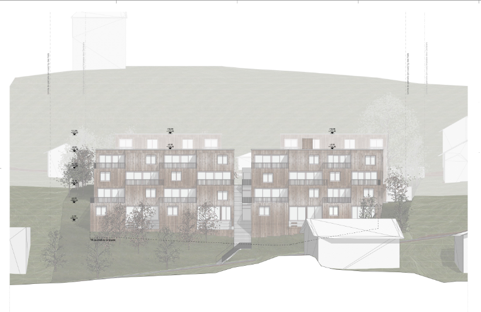
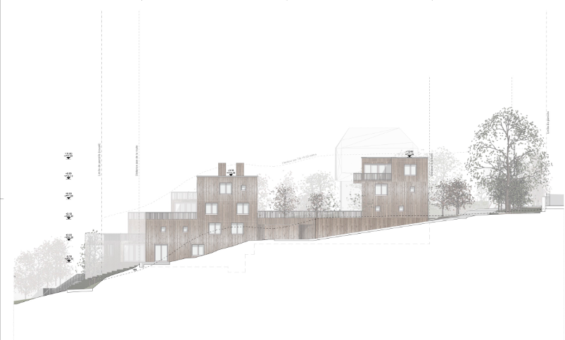
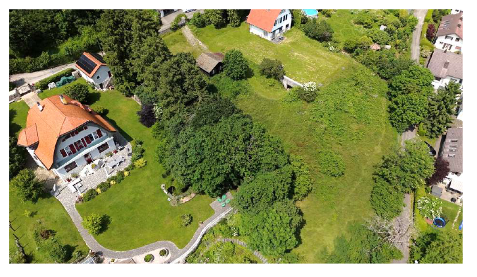
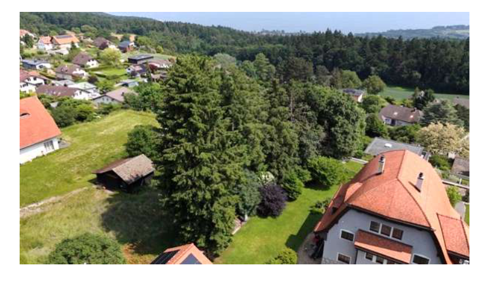
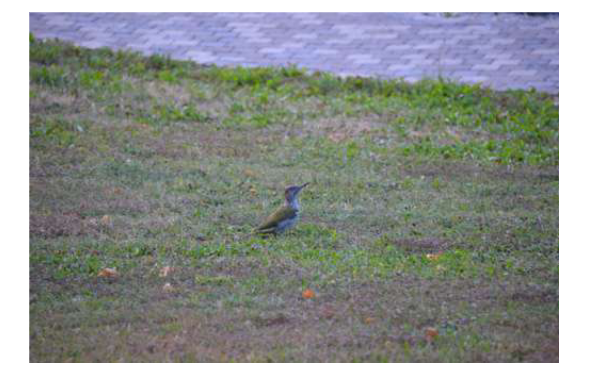
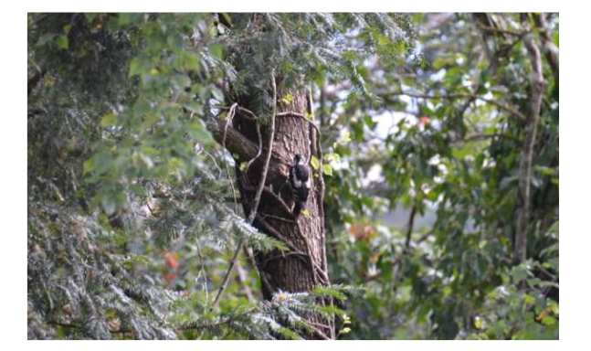
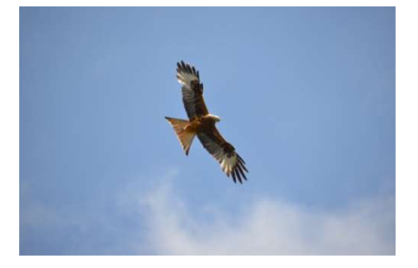

Le Projet : SATAC 122760 Parcelles 406 & 409


Projet : Maisons terrasses (+1 étage)



État actuel : Bosquet, lisière de forêt, cordon boisé et biodiversité



Faune observée: Pics verts, rapaces. La liste est non exhausive.